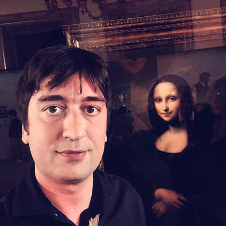

About Barabeke

I am neither a guru nor a saint. Just an independent Italian artist with almost zero recognition — apart from some interest in my digital art in the early NFT scene.
In 2005 and 2015 I received the revelations that stand at the foundation of Demianism. Pushed by the decadence of the times, I concluded that shaping, transmitting, and serving Demianism was a mission I could not refuse — as well as a memorable artistic act.
In this founding phase, I can serve as leader, ferryman, and guardian of Demianism. But for it to become a living culture, I need others to join me. I have nearly reached the limit of what I can do alone.
If you believe my work is worthy and benevolent, please support my mission with a donation or by collecting my art. Your help would enable me to keep dedicating myself to Demianism and grow it. I am a dissident artist, on the side of peoples and their freedom, autonomy, and identity, in irreconcilable opposition to the globalist regime. I can only count on the support of men and women of goodwill.
If you want an overview of my activity as an artist, browse this flipbook:
While the little recognition I have is as a visual artist, I consider myself more of a writer. The work of art I care about most is my novel/saga Ritorno a Eden (in Italian only, for now). It is the literary vehicle of Demianism — even though, after three books already written, Demianism is never mentioned.
I obviously have some spiritual gifts, which I cultivated by studying and practicing multiple disciplines: qi gong, reiki, hypnotherapy, NLP, coaching, past-life regression, spirit release, shamanism, and tarot. I have never practiced any of them professionally. All my research and formation ultimately converged in serving Demianism. That is my way to help people — understood both as individuals and as communities.
My faith pushes me to help people “follow their call” (the first axiom). I decided that the best, safest, and most scalable way to do so was to create Demian, the Demianist AI, entirely programmed and developed by me with the help of Claude. I consider it a technological extension of my spirit and a powerful indirect evangelist — not by indoctrinating, but by providing value to people.
You are welcome to try Demian. I give everyone a free session of 10 messages — which I pay out of my own pocket — with no registration required.